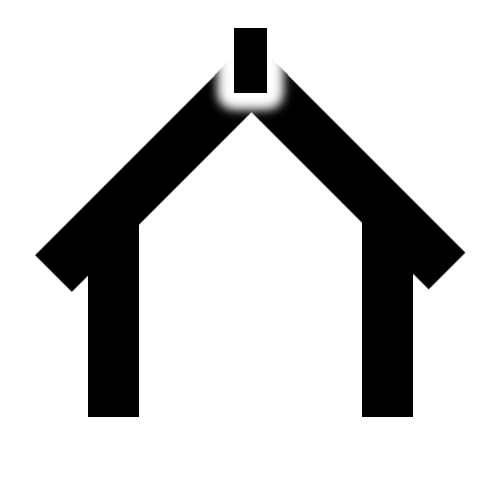

Help
The player shows a list of all the phrases that make up the item you have selected. The player page has the name of the selected item at the top, with the phrases ordered in a single vertical column beneath. At the very bottom of the phrase list is the audio player. To start listening just click the play button; You can stop at any time by clicking the pause button. You will notice that while a phrase is playing it is highlighted with a white border. This helps you to keep a track of which phrase you are currently listening to.
The player plays all selected phrases in the order that they appear on the page. Once all phrases have been played the player starts at the top again.
At any time, you can de-select and re-select any phrase, simply by touching it. A de-selected phrase is shown in dark grey, whereas a selected phrase is stark white. As play progresses, any de-selected phrases will be skipped. If all phrases are de-selected ( that is, no phrases are selected), then playback will stop. You can resume playback again by selecting at lease one phrase, then again touching the play button.
The Control Panel
The control panel / tool bar at the bottom of the page provides the following functions:
-  takes you to the main page
- takes you back one page
 selects all phrases
selects all phrases- de-selects all phrases
 increases the font size
increases the font size- decreases the font size
 View the help pages
View the help pages